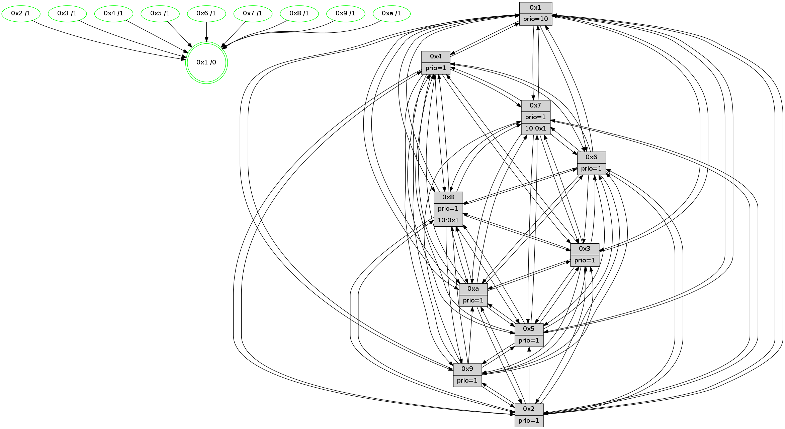

>> << IDX [start] -100 -25 -5 +0 +5 +25 +100 [935.151932955]
 Previous packets
----------------------------------------------------------------------
930.423148 beacon01(faad) #0 coord=01,02,03,04,05,06,07,0a,09,08 cycle=688.0ms assoc
-- color-indic=1 64 f3 5d
930.433131 beacon02(faad) #0 coord=01,02,03,04,05,06,07,0a,09,08 cycle=688.0ms assoc 64 60 6c
930.443129 beacon03(faad) #0 coord=01,02,03,04,05,06,07,0a,09,08 cycle=688.0ms assoc 64 1a 21
930.453131 beacon04(faad) #0 coord=01,02,03,04,05,06,07,0a,09,08 cycle=688.0ms assoc 64 6d cb
930.463131 beacon05(faad) #0 coord=01,02,03,04,05,06,07,0a,09,08 cycle=688.0ms assoc 64 17 86
930.473132 beacon06(faad) #0 coord=01,02,03,04,05,06,07,0a,09,08 cycle=688.0ms assoc 64 99 51
930.483131 beacon07(faad) #0 coord=01,02,03,04,05,06,07,0a,09,08 cycle=688.0ms assoc 64 e3 1c
930.493135 beacon0a(faad) #0 coord=01,02,03,04,05,06,07,0a,09,08 cycle=688.0ms assoc 64 92 17
930.503137 beacon09(faad) #0 coord=01,02,03,04,05,06,07,0a,09,08 cycle=688.0ms assoc 64 1c c0
930.513137 beacon08(faad) #0 coord=01,02,03,04,05,06,07,0a,09,08 cycle=688.0ms assoc 64 66 8d
930.525342 [Hello(1): seq=504 sym=4,2,9,5,10,3,8,6,7 sysInfo=coloring-mode-on,ColoringModeRequestCalled stat=4:4,1,13,0/2:4,4,11,11/9:3,0,12,5/5:15,2,3,4/10:8,2,8,2/3:8,11,8,2/8:9,12,6,0/6:3,2,8,10/7:3,15,12,11]
930.528462 [Hello(3): seq=595 sym=1,7,6,2,4,8,9,10,5 sysInfo= stat=1:11,11,3,0/7:3,2,5,7/6:11,12,8,2/2:9,2,9,9/4:10,9,12,5/8:6,9,5,1/9:10,13,8,10/10:1,15,6,2/5:1,11,4,10]
930.531752 [Hello(2): seq=591 sym=4,5,7,6,3,9,8,10,1 sysInfo=hasWarning stat=4:0,12,4,5/5:6,10,4,0/7:15,13,0,9/6:9,1,8,8/3:0,9,7,5/9:15,0,9,4/8:3,10,6,8/10:3,11,9,9/1:5,12,12,1]
930.535224 [Color(2) seq=240 @0:0 prio=1]
930.537540 [Hello(6): seq=595 sym=2,3,5,4,7,9,8,10,1 sysInfo= stat=2:3,2,5,8/3:13,6,15,9/5:13,15,13,12/4:7,4,4,0/7:5,12,11,5/9:0,1,13,4/8:2,14,9,1/10:6,7,3,10/1:10,1,9,1]
930.541165 [Hello(5): seq=595 sym=7,6,4,3,1,9,8,10 sysInfo=hasWarning stat=7:10,13,0,8/6:11,14,10,10/4:8,12,14,6/3:3,15,6,9/1:9,14,13,1/9:2,4,11,4/8:5,6,10,8/10:5,8,5,4]
930.543875 [Color(5) seq=248 @0:0 prio=1]
930.546234 [Color(6) seq=227 @0:0 prio=1]
----------------------------------------------------------------------
931.211279 beacon01(faad) #0 coord=01,02,03,04,05,06,07,0a,09,08 cycle=688.0ms assoc
-- color-indic=1 64 4f 58
931.221260 beacon02(faad) #0 coord=01,02,03,04,05,06,07,0a,09,08 cycle=688.0ms assoc 64 dc 69
931.231262 beacon03(faad) #0 coord=01,02,03,04,05,06,07,0a,09,08 cycle=688.0ms assoc 64 a6 24
931.241263 beacon04(faad) #0 coord=01,02,03,04,05,06,07,0a,09,08 cycle=688.0ms assoc 64 d1 ce
931.251262 beacon05(faad) #0 coord=01,02,03,04,05,06,07,0a,09,08 cycle=688.0ms assoc 64 ab 83
931.261263 beacon06(faad) #0 coord=01,02,03,04,05,06,07,0a,09,08 cycle=688.0ms assoc 64 25 54
931.271263 beacon07(faad) #0 coord=01,02,03,04,05,06,07,0a,09,08 cycle=688.0ms assoc 64 5f 19
931.281267 beacon0a(faad) #0 coord=01,02,03,04,05,06,07,0a,09,08 cycle=688.0ms assoc 64 2e 12
931.291267 beacon09(faad) #0 coord=01,02,03,04,05,06,07,0a,09,08 cycle=688.0ms assoc 64 a0 c5
931.301266 beacon08(faad) #0 coord=01,02,03,04,05,06,07,0a,09,08 cycle=688.0ms assoc 64 da 88
931.313398 [Hello(4): seq=595 sym=5,7,6,2,3,9,8,10,1 sysInfo= stat=5:8,8,11,10/7:15,2,14,6/6:5,12,9,9/2:9,6,5,9/3:15,4,8,7/9:14,12,0,7/8:11,11,2,1/10:2,2,2,9/1:1,14,13,1]
931.316585 [Hello(7): seq=595 sym=2,3,5,6,4,8,10,1 sysInfo=hasWarning stat=2:6,14,7,12/3:5,9,14,11/5:8,14,3,14/6:4,9,15,6/4:8,6,13,0/8:1,2,1,0/10:14,5,4,1/1:7,8,11,0]
931.318921 [Hello(8): seq=539 sym=5,2,3,4,6,10,1 asym=7 sysInfo=hasWarning stat=5:10,3,0,11/2:9,14,11,4/3:12,13,10,11/4:13,2,9,6/6:13,2,8,10/10:15,2,3,0/1:15,1,10,0/7:1,2,0,0]
931.321673 [STC(1) #0.121 tree-change,inconsistent-stability,stable,to-color d=0]
931.322941 [Hello(9): seq=539 sym=2,5,3,4,7,6,8,10,1 asym= sysInfo=hasWarning stat=2:8,5,11,2/5:10,5,8,2/3:7,7,7,11/4:13,6,6,6/7:5,10,12,8/6:8,2,0,8/8:2,15,13,1/10:7,11,1,1/1:2,14,14,1]
931.326612 [Color(1) seq=276 @0:0 prio=10]
931.329098 [Color(9) seq=244 @0:0 prio=1]
931.332338 [Color(7) seq=190 @0:0 prio=1]
931.335183 [Hello(10): seq=528 sym=6,2,3,8,7,5,4,1 sysInfo=hasWarning stat=6:10,4,13,4/2:0,14,10,4/3:9,14,5,7/8:9,5,2,0/7:0,2,0,0/5:13,0,15,11/4:6,6,2,6/1:10,13,14,1]
931.338196 [Color(10) seq=216 @0:0 prio=1]
931.340140 [Color(8) seq=240 @0:0 prio=1]
----------------------------------------------------------------------
931.999408 beacon01(faad) #0 coord=01,02,03,04,05,06,07,0a,09,08 cycle=688.0ms assoc
-- color-indic=1 64 5b 36
932.009391 beacon02(faad) #0 coord=01,02,03,04,05,06,07,0a,09,08 cycle=688.0ms assoc 64 c8 07
932.019391 beacon03(faad) #0 coord=01,02,03,04,05,06,07,0a,09,08 cycle=688.0ms assoc 64 b2 4a
932.029391 beacon04(faad) #0 coord=01,02,03,04,05,06,07,0a,09,08 cycle=688.0ms assoc 64 c5 a0
932.039391 beacon05(faad) #0 coord=01,02,03,04,05,06,07,0a,09,08 cycle=688.0ms assoc 64 bf ed
932.049392 beacon06(faad) #0 coord=01,02,03,04,05,06,07,0a,09,08 cycle=688.0ms assoc 64 31 3a
932.059392 beacon07(faad) #0 coord=01,02,03,04,05,06,07,0a,09,08 cycle=688.0ms assoc 64 4b 77
932.069396 beacon0a(faad) #0 coord=01,02,03,04,05,06,07,0a,09,08 cycle=688.0ms assoc 64 3a 7c
932.079398 beacon09(faad) #0 coord=01,02,03,04,05,06,07,0a,09,08 cycle=688.0ms assoc 64 b4 ab
932.089396 beacon08(faad) #0 coord=01,02,03,04,05,06,07,0a,09,08 cycle=688.0ms assoc 64 ce e6
932.100974 [Hello(1): seq=505 sym=4,2,9,5,10,3,8,6,7 sysInfo=coloring-mode-on,ColoringModeRequestCalled stat=4:5,1,13,0/2:5,5,11,11/9:4,1,12,5/5:0,3,3,4/10:8,3,8,2/3:9,12,8,2/8:9,13,6,0/6:4,3,8,10/7:3,0,12,11]
932.105256 [Hello(5): seq=596 sym=7,6,4,3,1,9,8,10 sysInfo=hasWarning stat=7:11,14,0,8/6:11,15,10,10/4:9,12,14,6/3:3,15,6,9/1:10,15,14,1/9:3,5,11,4/8:6,7,10,8/10:5,9,5,4]
932.108154 [Hello(6): seq=596 sym=2,3,5,4,7,9,8,10,1 sysInfo= stat=2:3,2,5,8/3:13,6,15,9/5:13,15,13,12/4:8,4,4,0/7:6,13,11,5/9:1,2,13,4/8:3,15,9,1/10:7,8,3,10/1:11,2,10,1]
932.110775 [STC(5)->1 #0.121 tree-change,inconsistent-stability,stable,to-color d=1]
932.112735 [Hello(3): seq=596 sym=1,7,6,2,4,8,9,10,5 sysInfo= stat=1:11,11,3,0/7:3,2,5,7/6:12,13,8,2/2:10,3,9,9/4:11,9,12,5/8:6,10,5,1/9:10,13,8,10/10:1,0,6,2/5:2,12,4,10]
932.115281 [STC(6)->1 #0.121 tree-change,inconsistent-stability,stable,to-color d=1]
932.117336 [Hello(2): seq=592 sym=4,5,7,6,3,9,8,10,1 sysInfo=hasWarning stat=4:1,12,4,5/5:7,11,4,0/7:0,14,0,9/6:10,2,8,8/3:0,9,7,5/9:0,1,9,4/8:4,11,6,8/10:3,12,9,9/1:6,13,13,1]
932.119932 [Color(6) seq=228 @0:0 prio=1]
932.121390 [STC(4)->1 #0.121 tree-change,inconsistent-stability,stable,to-color d=1]
932.123278 [Color(5) seq=249 @0:0 prio=1]
932.126058 [TreeStatus(4)-.->1 #0.121 tree-change,inconsistent-stability,stable child=1]
932.131315 [STC(2)->1 #0.121 tree-change,inconsistent-stability,stable,to-color d=1]
932.134237 [Color(2) seq=241 @0:0 prio=1]
----------------------------------------------------------------------
932.787541 beacon01(faad) #0 coord=01,02,03,04,05,06,07,0a,09,08 cycle=688.0ms assoc
-- color-indic=1 64 e7 33
932.797522 beacon02(faad) #0 coord=01,02,03,04,05,06,07,0a,09,08 cycle=688.0ms assoc 64 74 02
932.807522 beacon03(faad) #0 coord=01,02,03,04,05,06,07,0a,09,08 cycle=688.0ms assoc 64 0e 4f
932.817524 beacon04(faad) #0 coord=01,02,03,04,05,06,07,0a,09,08 cycle=688.0ms assoc 64 79 a5
932.827523 beacon05(faad) #0 coord=01,02,03,04,05,06,07,0a,09,08 cycle=688.0ms assoc 64 03 e8
932.837524 beacon06(faad) #0 coord=01,02,03,04,05,06,07,0a,09,08 cycle=688.0ms assoc 64 8d 3f
932.847525 beacon07(faad) #0 coord=01,02,03,04,05,06,07,0a,09,08 cycle=688.0ms assoc 64 f7 72
932.857530 beacon0a(faad) #0 coord=01,02,03,04,05,06,07,0a,09,08 cycle=688.0ms assoc 64 86 79
932.867528 beacon09(faad) #0 coord=01,02,03,04,05,06,07,0a,09,08 cycle=688.0ms assoc 64 08 ae
932.877529 beacon08(faad) #0 coord=01,02,03,04,05,06,07,0a,09,08 cycle=688.0ms assoc 64 72 e3
932.889387 [Hello(4): seq=596 sym=5,7,6,2,3,9,8,10,1 sysInfo= stat=5:8,8,11,10/7:0,3,14,6/6:5,12,9,9/2:9,7,6,9/3:15,4,8,7/9:15,13,0,7/8:12,12,2,1/10:3,3,2,9/1:1,15,14,1]
932.892806 [Hello(8): seq=540 sym=5,2,3,4,6,10,1 asym=7 sysInfo=hasWarning stat=5:11,4,1,11/2:10,15,12,4/3:13,13,10,11/4:14,2,10,7/6:14,3,9,10/10:15,2,3,0/1:0,1,10,0/7:1,2,0,0]
932.895185 [Hello(10): seq=529 sym=6,2,3,8,7,5,4,1 sysInfo=hasWarning stat=6:11,5,14,4/2:1,15,11,4/3:10,14,5,7/8:9,6,2,0/7:0,2,0,0/5:14,1,0,11/4:7,6,3,7/1:11,13,14,1]
932.897650 [Color(1) seq=277 @0:0 prio=10]
932.899053 [Color(8) seq=241 @0:0 prio=1]
932.900720 [Hello(9): seq=540 sym=2,5,3,4,7,6,8,10,1 sysInfo=hasWarning stat=2:9,6,12,2/5:11,6,9,2/3:8,7,7,11/4:14,6,7,7/7:5,11,12,8/6:9,3,1,8/8:2,0,13,1/10:7,12,1,1/1:3,14,14,1]
932.904368 [Color(10) seq=217 @0:0 prio=1]
932.905903 [Color(9) seq=245 @0:0 prio=1]
932.907831 [Hello(7): seq=596 sym=2,3,5,6,4,8,10,1 sysInfo=hasWarning stat=2:7,15,8,12/3:6,9,14,11/5:9,15,4,14/6:5,10,0,6/4:9,6,14,1/8:1,3,1,0/10:14,6,4,1/1:8,8,11,0]
932.910854 [Color(7) seq=191 @0:0 prio=1]
932.914945 [Color(3) seq=237 @0:0 prio=1]
----------------------------------------------------------------------
933.575671 beacon01(faad) #0 coord=01,02,03,04,05,06,07,0a,09,08 cycle=688.0ms assoc
-- color-indic=1 64 23 3d
933.585653 beacon02(faad) #0 coord=01,02,03,04,05,06,07,0a,09,08 cycle=688.0ms assoc 64 b0 0c
933.595653 beacon03(faad) #0 coord=01,02,03,04,05,06,07,0a,09,08 cycle=688.0ms assoc 64 ca 41
933.605654 beacon04(faad) #0 coord=01,02,03,04,05,06,07,0a,09,08 cycle=688.0ms assoc 64 bd ab
933.615655 beacon05(faad) #0 coord=01,02,03,04,05,06,07,0a,09,08 cycle=688.0ms assoc 64 c7 e6
933.625655 beacon06(faad) #0 coord=01,02,03,04,05,06,07,0a,09,08 cycle=688.0ms assoc 64 49 31
933.635655 beacon07(faad) #0 coord=01,02,03,04,05,06,07,0a,09,08 cycle=688.0ms assoc 64 33 7c
933.645660 beacon0a(faad) #0 coord=01,02,03,04,05,06,07,0a,09,08 cycle=688.0ms assoc 64 42 77
933.655661 beacon09(faad) #0 coord=01,02,03,04,05,06,07,0a,09,08 cycle=688.0ms assoc 64 cc a0
933.665661 beacon08(faad) #0 coord=01,02,03,04,05,06,07,0a,09,08 cycle=688.0ms assoc 64 b6 ed
933.677506 [Hello(3): seq=597 sym=1,7,6,2,4,8,9,10,5 sysInfo= stat=1:11,11,3,0/7:3,2,5,7/6:12,14,9,2/2:11,4,10,9/4:12,9,13,6/8:6,10,5,1/9:10,13,8,10/10:1,0,6,2/5:2,13,4,10]
933.680873 [Color(4) seq=202 @0:0 prio=1]
933.682398 [Hello(6): seq=597 sym=2,3,5,4,7,9,8,10,1 sysInfo= stat=2:3,3,6,8/3:13,7,15,9/5:13,0,13,12/4:9,4,5,1/7:7,14,11,5/9:2,3,13,4/8:4,0,9,1/10:7,9,3,10/1:12,3,10,1]
933.685337 [Hello(5): seq=597 sym=7,6,4,3,1,9,8,10 sysInfo=hasWarning stat=7:12,15,0,8/6:11,15,10,10/4:10,12,14,7/3:3,0,6,9/1:11,0,14,1/9:4,6,11,4/8:7,8,10,8/10:5,10,5,4]
933.688390 [Hello(1): seq=506 sym=4,2,9,5,10,3,8,6,7 sysInfo=coloring-mode-on,ColoringModeRequestCalled stat=4:6,1,14,1/2:6,6,12,11/9:5,2,12,5/5:1,4,4,4/10:8,4,8,2/3:10,13,8,2/8:9,14,6,0/6:5,4,9,10/7:4,1,12,11]
933.691234 [Hello(2): seq=593 sym=4,5,7,6,3,9,8,10,1 sysInfo=hasWarning stat=4:2,12,4,5/5:7,11,4,0/7:1,15,0,9/6:10,2,8,8/3:0,10,7,5/9:1,2,9,4/8:5,12,6,8/10:4,13,9,9/1:7,14,13,1]
933.695851 [Color(6) seq=229 @0:0 prio=1]
933.697377 [Color(2) seq=242 @0:0 prio=1]
933.702843 [Color(5) seq=250 @0:0 prio=1]
----------------------------------------------------------------------
934.363801 beacon01(faad) #0 coord=01,02,03,04,05,06,07,0a,09,08 cycle=688.0ms assoc
-- color-indic=1 64 9f 38
934.373783 beacon02(faad) #0 coord=01,02,03,04,05,06,07,0a,09,08 cycle=688.0ms assoc 64 0c 09
934.383784 beacon03(faad) #0 coord=01,02,03,04,05,06,07,0a,09,08 cycle=688.0ms assoc 64 76 44
934.393783 beacon04(faad) #0 coord=01,02,03,04,05,06,07,0a,09,08 cycle=688.0ms assoc 64 01 ae
934.403785 beacon05(faad) #0 coord=01,02,03,04,05,06,07,0a,09,08 cycle=688.0ms assoc 64 7b e3
934.413783 beacon06(faad) #0 coord=01,02,03,04,05,06,07,0a,09,08 cycle=688.0ms assoc 64 f5 34
934.423786 beacon07(faad) #0 coord=01,02,03,04,05,06,07,0a,09,08 cycle=688.0ms assoc 64 8f 79
934.433788 beacon0a(faad) #0 coord=01,02,03,04,05,06,07,0a,09,08 cycle=688.0ms assoc 64 fe 72
934.443790 beacon09(faad) #0 coord=01,02,03,04,05,06,07,0a,09,08 cycle=688.0ms assoc 64 70 a5
934.453788 beacon08(faad) #0 coord=01,02,03,04,05,06,07,0a,09,08 cycle=688.0ms assoc 64 0a e8
934.466927 [Hello(4): seq=597 sym=5,7,6,2,3,9,8,10,1 sysInfo= stat=5:9,9,11,10/7:1,4,14,6/6:6,13,9,9/2:10,8,6,9/3:0,5,8,7/9:0,14,0,7/8:13,13,2,1/10:3,4,2,9/1:2,0,14,1]
934.469660 [Hello(10): seq=530 sym=6,2,3,8,7,5,4,1 sysInfo=hasWarning stat=6:12,6,14,4/2:2,0,11,4/3:11,15,5,7/8:9,6,2,0/7:1,3,0,0/5:15,2,0,11/4:8,7,3,7/1:12,13,14,1]
934.472381 [Hello(9): seq=541 sym=2,5,3,4,7,6,8,10,1 sysInfo=hasWarning stat=2:10,7,12,2/5:12,7,9,2/3:9,8,7,11/4:15,7,7,7/7:6,12,12,8/6:10,4,1,8/8:3,0,13,1/10:7,12,1,1/1:4,14,14,1]
934.475361 [Color(10) seq=218 @0:0 prio=1]
934.476948 [Hello(7): seq=597 sym=2,3,5,6,4,8,10,1 sysInfo=hasWarning stat=2:8,0,8,12/3:7,10,14,11/5:10,0,4,14/6:6,11,0,6/4:10,7,14,1/8:1,3,1,0/10:14,6,4,1/1:9,8,11,0]
934.479639 [Color(7) seq=192 @0:0 prio=1 >10.@1,1.@5,1.@6]
934.483626 [Hello(8): seq=541 sym=5,2,3,4,9,6,7,10,1 sysInfo=hasWarning stat=5:12,5,1,11/2:11,0,12,4/3:14,14,10,11/4:15,3,10,7/9:0,1,0,0/6:15,4,9,10/7:2,3,0,0/10:0,3,3,0/1:1,1,10,0]
934.487330 [Color(9) seq=246 @0:0 prio=1]
934.489072 [Color(3) seq=238 @0:0 prio=1]
934.495183 [Color(8) seq=242 @0:0 prio=1 >10.@1,1.@5,1.@6]